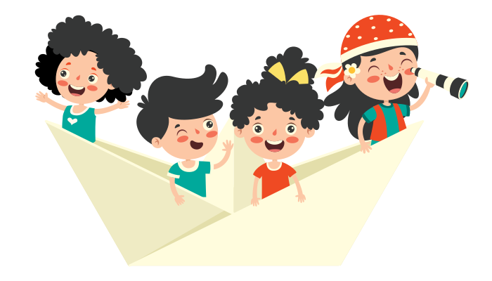

Aktiviti ini boleh menarik minat murid terhadap pembelajaran terutamanya bagi yang mempunyai kecerdasan verbal linguistik dan interpersonal apabila mereka dapat bercerita semula.
Konsep STEM: Ketumpatan

Murid dibahagikan kepada kumpulan mengikut MI masing-masing. Murid diberi contoh cerita. Setiap kumpulan mempersembahkan cerita tersebut semula mengikut kreativiti masing-masing.

1. Murid di dalam kumpulan diberi beberapa bahan maujud yang berbeza jenis material.
2. Setiap kumpulan membuat pemerhatian terhadap bahan-bahan tersebut dari segi saiz dan beratnya.
3. Setiap kumpulan menjalankan eksperimen untuk menguji sifat bahan-bahan sama ada bahan tersebut timbul atau tenggelam.
4. Hasil dapatan boleh dipersembahkan dalam bentuk verbal, laporan bertulis atau lukisan.
Aktiviti ini melibatkan aktiviti hands-on yang menggalakkan kecerdasan kinestetik. Sekiranya bahan yang digunakan mempunyai elemen semula jadi, kecerdasan naturalis murid juga dapat diintegrasikan. Di samping itu, apabila murid diberi peluang untuk melaporkan hasil dapatan dengan cara yang digemari, aktiviti ini dapat mencungkil dan menyerlahkan kecerdasan visual ruang atau verbal linguistik mereka.
1. Murid diberi bahan dan diminta untuk menjalankan aktiviti ini secara berkumpulan dengan:
- Menjadikan pensel tenggelam.
- Mengapungkan pemadam.
2. Murid mempersembahkan hasil kerja kumpulan mereka. Perbincangan lanjut antara guru dan murid boleh dilakukan untuk mengaitkan aktiviti dengan konsep ketumpatan.

Aktiviti ini menggalakkan kemahiran berfikir aras tinggi murid. Di samping itu, aktiviti ini menyerlahkan kecerdasan kinestetik murid apabila melakukan aktiviti secara hands-on serta kecerdasan interpersonal semasa bekerja di dalam kumpulan.
1. Murid membina bot yang boleh terapung di atas permukaan air menggunakan bahan sedia ada di rumah.
2. Murid menguji sama ada bot yang dihasilkannya boleh terapung atau tidak.
3. Murid diminta untuk menerangkan pengalaman mereka menghasilkan bot.
Aktiviti ini menggalakkan pemikiran mereka cipta murid. Melalui aktiviti ini, MI murid yang diintegrasikan ialah kecerdasan visual ruang, kinestetik, interpersonal dan naturalis. MI yang terlibat dapat meningkatkan kefahaman murid tentang konsep KETUMPATAN.
Petunjuk MI
Verbal Linguistik
Muzik
Kinestetik
Logik Matematik
Intrapersonal
Interpersonal
Eksistensial
Petunjuk PBD
Lisan
Bertulis